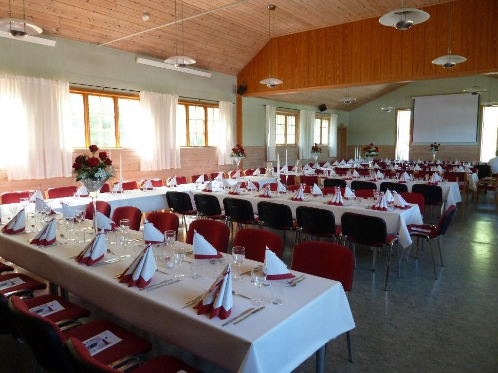
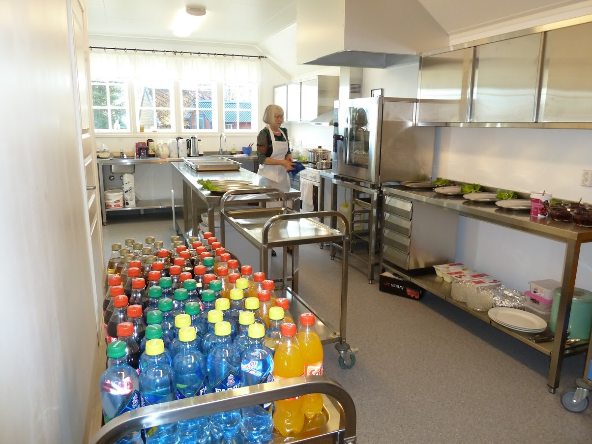

Ask Menighetshus (Askøy)
Tekst om husets fortreffeligheter.
Ask menighetshus er blitt rehabilitert flere ganger, og resultatet er blitt et trivelig og tjenlig hus. Kjøkkenet ble nytt i 2014 og må sies å være et «storkjøkken» i passelig format for ca. 100 gjester som salen rommer. Men rundt 60 gjerster er optimalt. Se bildene under. Huset har alt av nødvendig dekketøy. Duker kan leies.
Vi har et godt høytaleranlegg og ypperlig projektor. Tar en med seg en bærbar pc, så er det adaptere for enkel påkobling. Toalettfasilitetene er nye, også for funksjonshemmede. Huset blir mye brukt til minnesamvær, dåps- og konfirmasjons-middager. Bryllup har det vært flere ganger. Også runde dager feires i huset. Vi understreker at det ikke er tillatt med alkoholservering.
Ta gjerne kontakt for omvisning, pris og bestilling:
Øyvind Fluge, 98817422
Prisene pr. januar 2021: Utleiepris er 2.500,-
vel og merke hvis en mopper selv etter arrangementet
Vask koster 500,- og kommer i tillegg.
Leie av dukene er 75,- pr. stk.
Ask menighetshus,
Askvegen 374, 5307
Ask Kontaktperson: Øyvind Fluge, 98817422,
epost: oyvindfluge@gmail.com
Styret for Ask menighetshus:
Leder: Øyvind Fluge
Nestleder: Ingebjørg Sønstabø
Kasserer: Tor Dag Kjosavik
Styremedlem: Bjørg Johannessen
Styremedlem: Marie Erstad


